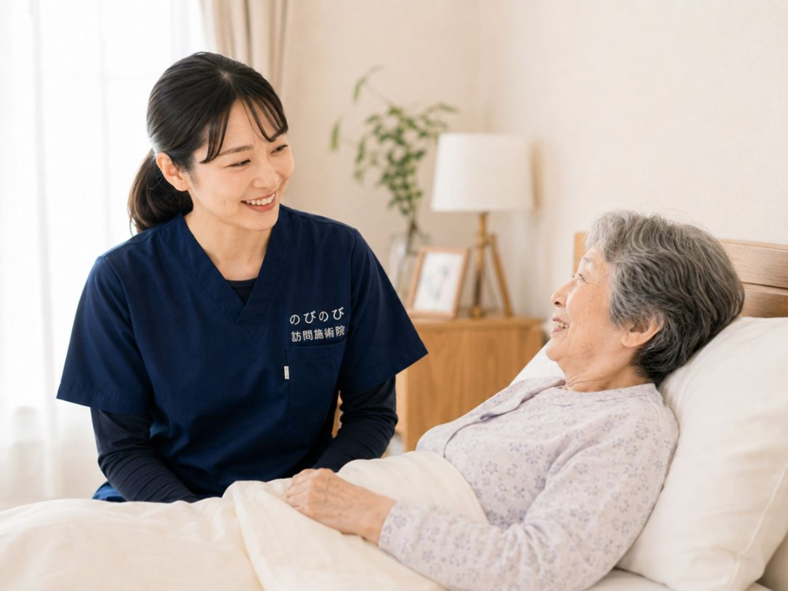

訪問で受けられる『はり』『きゅう（お灸）』『マッサージ』は、それぞれ何が違い、どう使い分けるのか。ご本人やご家族から、よくお問い合わせいただきます。ざっくり言えば、はりは細い鍼で体のツボなどに刺激を与え、きゅうは温熱で温め、マッサージは手技で筋肉をほぐす方法です。のびのび訪問施術院では、国家資格をもつはり師・きゅう師がご自宅へ伺い、体の状態やご本人の好みに合わせて選び、組み合わせて行います。この記事では三つの違いと使い分けの目安を、はじめての方にも分かるようにご説明します。
要点から。はり（鍼）は細い鍼でツボや筋肉に刺激を与える方法、きゅう（灸）はもぐさの温熱で温める方法、マッサージ（あん摩マッサージ指圧）は手のひらや指の手技でほぐす方法です。それぞれの向き不向きに合わせて選び、訪問では一回のなかで組み合わせて用いることもできます。のびのび訪問施術院は、はり・きゅうを施術のベースにしています。医師が必要と認めれば医療保険の対象で、はり・きゅうの料金は1回3,950円、自己負担は1割で約395円が目安。エリア内は別途の出張費がかかりません。介護保険の区分支給限度額とは別枠で、要介護認定は不要ですが医師の同意書が必要です。効果には個人差があります。
「はり（鍼）」は、細い鍼でツボや筋肉に働きかける
はり（鍼）は、髪の毛ほどの細い鍼を、体のツボや、こわばった筋肉のポイントに用いる方法です。『痛そう』というイメージをもたれがちですが、注射の針とはまったく違い、多くの方が思ったより痛くないと感じられます。筋肉の緊張をやわらげたり、血のめぐりをうながしたりする働きが期待できます。
刺激の強さは、その方に合わせて調整できます。鍼が初めての方や苦手な方には、ごく浅く・やさしく行うこともできますので、まずは無理のない範囲から試していただけます。合わないと感じたときは、いつでも方法を変えられます。
「きゅう（お灸）」は、温熱で体をゆるめる
きゅう（灸）は、もぐさを使って、ツボや冷えた部分を温める方法です。じんわりとした温かさが心地よく、冷えの強い方や、体を芯から温めたい方に向いています。『熱そう』と思われがちですが、やけどをするような熱さではなく、心地よい温かさになるよう加減します。
冷えやめぐりの悪さからくる不調に対して、はりや手技とあわせて用いることが多い方法です。体をほっとゆるめる時間にもなり、緊張がとけてリラックスできたとおっしゃる方もいらっしゃいます。感じ方には個人差があります。
「マッサージ（あん摩マッサージ指圧）」は、手技で筋肉をほぐす
マッサージ（あん摩マッサージ指圧）は、手のひらや指を使って、こわばった筋肉をほぐし、血のめぐりやリンパの流れをうながす方法です。関節を動かしにくい方の動かしやすさを支えたり、むくみをやわらげたりする面でも役立ちます。
道具を使わず、手の感触で体の状態を確かめながら行えるのも特徴です。触れられることの心地よさや安心感も、マッサージの働きの一つだと考えています。鍼やお灸が苦手な方は、まずマッサージから始めることもできます。
それぞれの向き・不向き（使い分けの目安）
大まかな目安として、はりは筋肉の深いこわばりや痛みのポイントに、きゅうは冷えの強い部分やめぐりの悪さに、マッサージは広い範囲のこわばりや動かしにくさに、それぞれ向いていると言われます。ただし、どれが合うかは症状や体質によって変わり、はっきり線引きできるものではありません。
『刺激はやさしいほうがいい』『温かいのが心地よい』といったご本人の好みも、手がかりになります。合う・合わないは、受けてみて確かめていくのがいちばんですので、初めは様子を見ながら、その方に合う形を一緒に見つけていきます。
訪問では、症状や好みに合わせて組み合わせる
はり・きゅう・マッサージは、どれか一つだけを用いることもあれば、体の状態に合わせて組み合わせることもあります。たとえば、こわばった筋肉を手技でほぐしつつ、冷えの強い部分をお灸で温め、痛みの強いポイントに鍼を用いる、といった形です。一回の訪問のなかで、必要に応じて使い分けます。
似た名前のサービスとの違いも、あわせて整理しておきます。国家資格のいらない訪問整体との違いは訪問マッサージと訪問整体は何が違う？に、医師が家に来る訪問診療・往診との役割の分担は訪問診療・往診と訪問鍼灸マッサージの違いは？にまとめました。
ご本人の『これは苦手』『これは心地よい』という声をうかがいながら、苦手なものは無理に用いません。どのように組み合わせるかは、その日の体調やご希望をうかがいながら決めていきます。誰がどんなときに受けられるかは、誰が受けられるもあわせてご覧ください。
「訪問マッサージ」と「訪問鍼灸」は、どう違うのでしょうか
ご自宅や施設へ伺って行う施術は、まとめて「訪問マッサージ」と呼ばれることが多く、お探しになるときも、その言葉で調べる方がほとんどです。ただ、制度のうえでは、ひとつの呼び名の中に別々の枠組みが入っています。
ひとつは、はり・きゅうの療養費です。神経痛、リウマチ、頸肩腕症候群、五十肩、腰痛症、頸椎捻挫後遺症といった慢性的な痛みについて、医師が施術を必要と認めた場合が対象になります。もうひとつは、あん摩マッサージ指圧の療養費で、麻痺や関節の動かしにくさなどについて医師が必要と認めた場合が対象です。いずれも医師の同意など所定の要件があり、体の状態と医師の判断によって、どちらにあたるかが変わります。
のびのび訪問施術院は、はり・きゅうを施術のベースにしています。その日の体の状態を確認しながら鍼やお灸を行い、必要に応じて手技やストレッチ、無理のない範囲で身体を動かす運動なども組み合わせます。そのため「訪問マッサージ」という言葉でお探しの方にとっては、当院の施術は「訪問鍼灸」に近い形になります。
呼び名の違いで迷っていただく必要はありません。ご本人にとって必要なのは、通院がむずかしくなった体をどう支えるかであって、制度の名前ではないからです。どの枠組みにあたるか、そもそも対象になるのかは、体の状態をうかがってからのご説明になります。まずは確認だけでも構いません。
保険の扱いが、少し異なります
はり・きゅうと、マッサージ（あん摩マッサージ指圧）は、医療保険のうえでの扱いが少し異なります。はり・きゅうは、神経痛や腰痛症といった慢性的な痛みなどに対して医師が必要と認めた場合に、マッサージは、麻痺や関節の動かしにくさなどに対して医師が必要と認めた場合に、それぞれ対象となります。
どちらにあたるか、あるいは両方が使えるかは、体の状態によって変わります。のびのび訪問施術院は、はり・きゅうを施術のベースにしていて、保険はすべて鍼灸で算定します。分かりにくい部分は、体の状態をうかがいながらご説明します。制度の全体像は総合ガイド、保険の仕組みは医療保険か介護保険かもご参照ください。限度額との関係は医療保険と介護保険の違いに書いています。
医療機関の治療が主、鍼灸マッサージは補助
ひとつ前提として、病気やけがそのものの治療は、医療機関で受けるのが主となります。訪問で受けるはり・きゅう・マッサージは、その治療の代わりではなく、こわばりや痛みをやわらげ、動きやすさや暮らしやすさを支える補助の立場にあります。
急な脱力やしびれ、排尿・排便の異常、激しい痛み、発熱などがあるときは、施術より先に医療機関へご相談ください。ふだんから主治医とのつながりを保っていただくことが、安心につながります。気になる変化は、ためらわずご相談いただければと思います。
気になる費用のこと
医師が施術を必要と認め、通院がむずかしい状態であれば、はり・きゅうの医療保険が使えます。自己負担は、施術総額3,950円に対して、1割の方で1回約395円が目安です。鍼とお灸をどう組み合わせても、この負担の目安は変わりません。月あたりの目安を知りたい方は訪問鍼灸マッサージの料金もどうぞ。
エリア内は別途の出張費・交通費がかかりません。お支払いは1か月ごとにまとめ、その月の施術内容がわかる明細をお渡しします。週2回のペースなら、ひと月の自己負担はおよそ3,160円ほど（1割の方）が見当です。料金のしくみも、あわせてご確認いただけます。
初めての方が心配されること・受けはじめの流れ
『鍼は痛い？』『お灸は熱い？』というのは、初めての方がよく心配される点です。どちらも、刺激や温かさの加減をその方に合わせて調整できますので、思ったよりずっとやさしいと感じる方が多いものです。不安な方は、まずマッサージから、鍼はごく浅くから、といった形も選べます。
受けはじめは、まずお電話などで、体の困りごとや、はり・きゅう・マッサージについて気になる点をお聞かせください。体の状態やご希望に合わせて、どの方法が合いそうかをご説明し、初回は様子を見ながら進めます。苦手なものは無理に用いません。費用は制度で決まっているので、あとから思わぬ請求が来ることもありません。
よくある質問
「訪問マッサージ」を探しているのですが、こちらでも受けられますか？
はい、ご相談いただけます。当院ははり・きゅうをベースにした訪問施術を行っており、その日の状態に応じて手技やストレッチなども組み合わせています。制度のうえでどの枠組みにあたるかは、体の状態と医師の判断によりますので、まずは対象になるかの確認からで構いません。
はり・きゅう・マッサージは、何がいちばん違うのですか？
はりは細い鍼でツボや筋肉に刺激を与える方法、きゅうはもぐさの温熱で温める方法、マッサージは手のひらや指の手技でほぐす方法です。刺激・温熱・手技という働きかけ方が主な違いです。
三つとも受けられますか？
症状や体の状態に合わせて、一回の訪問のなかで組み合わせて受けられる場合があります。どれが合うかは様子を見ながら決めていきます。苦手なものは無理に用いません。
どれを選べばよいか分かりません。
こわばりや痛み、冷えなどの症状と、刺激や温かさへの好みをうかがい、合いそうな方法をご提案します。合う・合わないは受けてみて確かめられますので、まずはご相談ください。
苦手なものは断れますか？
はい。苦手なものは無理に用いません。マッサージから始める、鍼はごく浅くから試すなど、その方に合わせて選べます。合わないと感じたら、いつでも方法を変えられます。
はり・きゅうとマッサージで、保険の扱いは違いますか？
医療保険のうえでの扱いは少し異なり、それぞれ医師が必要と認めた場合に対象となります。両方が使える場合もあります。分かりにくい部分は施術院がご説明します。
出張費や交通費は別にかかりますか？
エリア内は別途の出張費・交通費はかかりません。料金に含まれており、自己負担は1割の方で1回約395円（施術総額3,950円）が目安です。
どの方法でも料金は同じですか？
はい。はり・きゅうは、どちらを用いても、また組み合わせても、料金は1回3,950円、1割の方で約395円が目安です。
要介護認定を受けていなくても頼めますか？
はい。訪問鍼灸マッサージは医療保険で受けるため、要介護認定は不要です。介護保険の区分支給限度額とも別枠です。ただし医師の同意書が必要になります。

訪問看護・訪問リハビリ・訪問鍼灸マッサージの違いと使い分け
続きを読む
高齢のご家族の足のむくみに｜原因と受診の目安、訪問での鍼灸・マッサージができること
続きを読む
訪問鍼灸マッサージと整骨院・整体・マッサージ店の違い｜高齢のご家族が迷わないための整理
続きを読む
大阪市北区の訪問鍼灸マッサージ｜都心のご自宅へ、はり・きゅうで首肩のケアを
続きを読む
訪問鍼灸マッサージと出張マッサージ・リラクゼーションはどう違う？国家資格と保険で見分ける
続きを読む